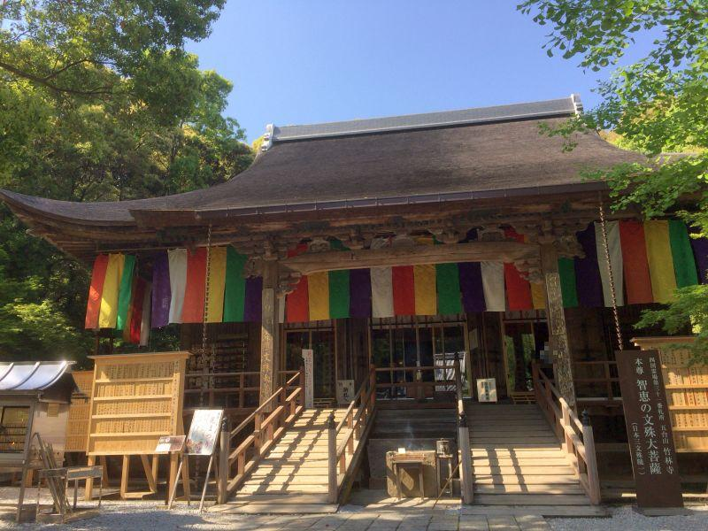
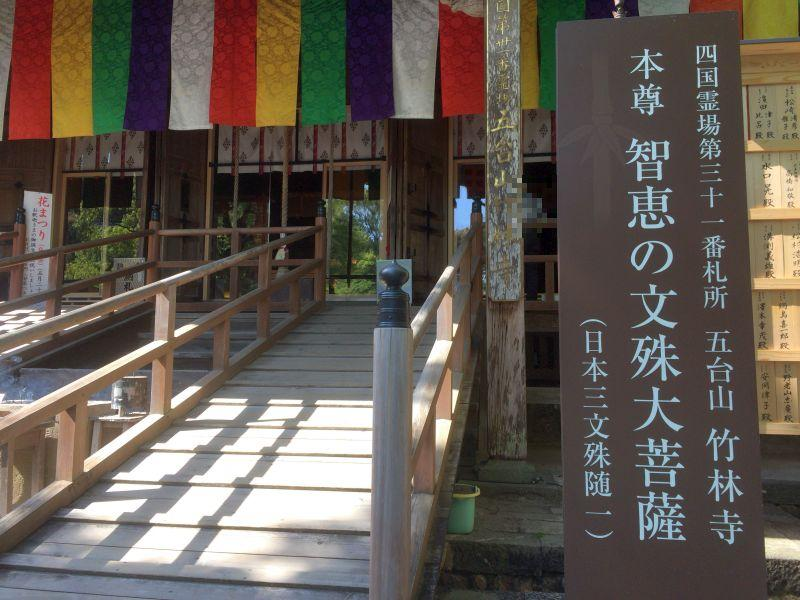
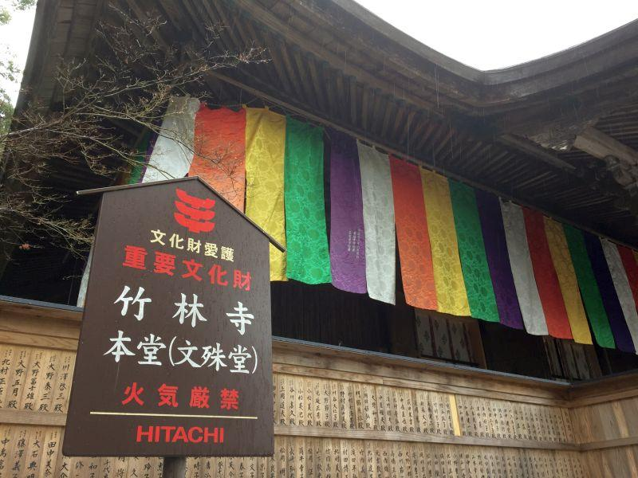
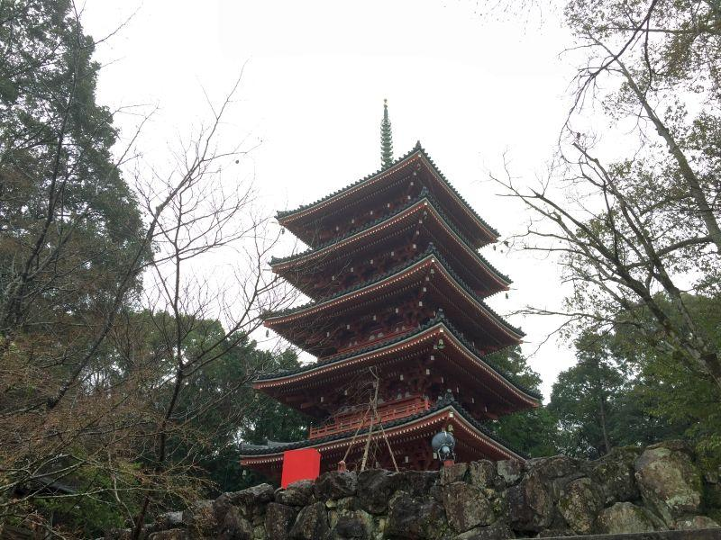
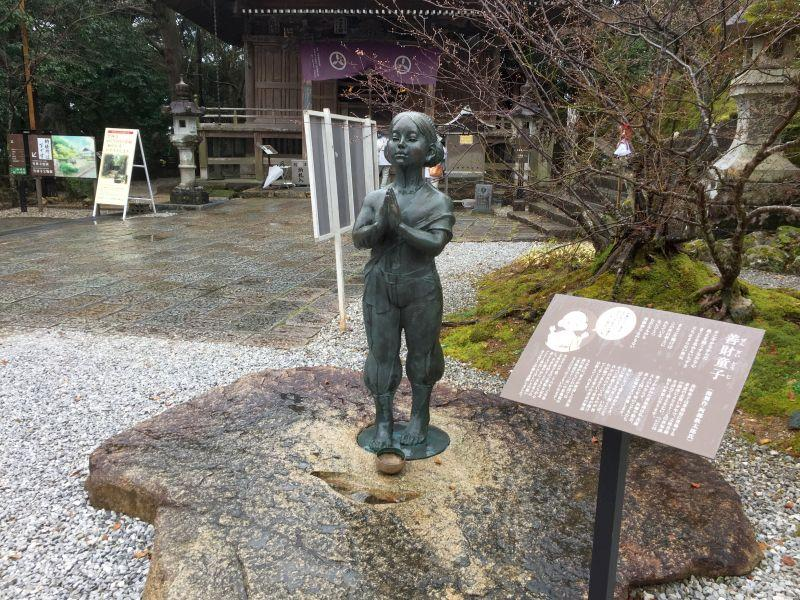
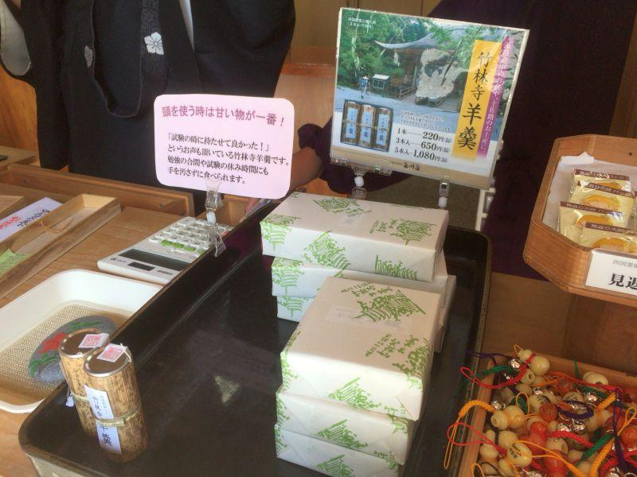

土佐を代表する寺院のご利益と名物土産 < 五台山竹林寺 / 高知市 >

四国八十八ヶ所・第31番札所竹林寺(ちくりんじ)。
高知県を代表する名刹であり、八十八を構成する札所の一つなので、お遍路さんが訪れての参拝は勿論のこと、一般の方々の参拝も見られます。
ご利益は様々頂くことができますが、とりわけ竹林寺で有名なものは "お知恵" です。
三人寄れば文殊の知恵

その寺院に祀られている主たる仏のことを「本尊(ほんぞん)」と言いますが、竹林寺のそれは "文殊菩薩(もんじゅぼさつ)"。
「三人寄れば文殊の知恵」
の諺で有名。
文殊菩薩は通称で、正式には 文殊文殊師利菩薩(もんじゅしりぼさつ)。無限の智慧(ちえ)を持ち、人々にそれを分け与える役割を担っています。
ただしそれは厳密には "智慧" であって、 "知恵" とは少し異なる。
智慧... 物事の本質を見極める力
知恵... 物事を成功に導くための力
文殊菩薩が我々に与えてくれるのは 前者の方ですが、現代では拡大解釈されて 後者のご利益で語られる方が一般的です。まあ、「頭が良いこと」には変わりはないということで、ここでは深く考えないようにしましょう。
竹林寺では "知恵の仏さま" こと、文殊菩薩が祀られていることから、学生らがここに来て 合格祈願の参拝や、お守りを求める姿を見ることができます。
本尊自体は秘仏で 見ることはできません(前仏は見ることができます)。
公開されるのは 50年に一度の御開帳のタイミング。前回が2014(平成26年)だったので、次回は... だいぶ先ですね。
お殿様由来の370年前の本堂

本尊が祀られているお堂の事を 「本堂」と言いますが、ここでは "文殊堂" の名で呼ばれることも多い。特に高知市民が「文殊さん」と言えば竹林寺の事を指す。
寛永22年(1644)、土佐藩第二代藩主・山内忠義(やまうちただよし)公によって造営された本堂は、当時代ではなく 室町時代の建築様式を持つ貴重なものとされ、国の重要文化財に指定されている。
竹林寺のシンボル・五重塔

高さ31mの塔、竹林寺のシンボル・五重塔。
元々あった五重塔は 明治32年(1899)の台風で倒壊。昭和55年(1980)に再建されたもの。
四国八十八ヶ所には五重塔を持つ寺院が四ヶ寺ありますが、そのうちの一つ。 →31番竹林寺、70番本山寺、75番善通寺、86番志度寺
塔内部には 真言宗において宇宙の中心を表す大日如来(だいにちにょらい)が祀られています。非公開。
五十三の善知識を訪ねる少年

本堂と大師堂の間に居るこちらの少年。
文殊菩薩を守護する四人の眷属(けんぞく)の一人で、名を "善財童子(ぜんざいどうじ)" と言います。
元々は長者の子として生まれ 何不自由無く暮らしていたが、ある日 仏の教えに目覚め 文殊菩薩の指導を受けて、善知識を身に付ける旅に出る。その指導者には僧侶はもちろん、一般庶民、遊女、自分と同じ年頃の子どもたち。この多様性は「多くの人たちに師事して 広く知識を得なさい」との、文殊さまの教えが込められています。
やがて少年は 普賢菩薩(ふげんぼさつ)の下で悟りを拓く。
また、その旅の経験を生かして 文殊菩薩らとの旅路を先導。一行は迷うことなく諸国を訪ね歩くことが出来て、文殊さまの持つ智慧が より世に広く行き渡ることとなった。
「可愛い子には旅をさせよ」
の諺は、この善財童子の旅路に由来するとか...
そんな向学心が旺盛で 少年らしく清らかな心を持つ者が、善財童子です。
また、善知識を得る旅で 訪ねた指導者は五十三人。
この数字を置き換えたものが "東海道五十三次(とうかいどうごじゅうさんつぎ)"。すなわち日本を代表する街道を整備する際に、宿場数の参考になったと言われています。
眷属(けんぞく)...従者のこと。使いの者。
名物・竹林寺羊羹

竹林寺参拝のお土産に「羊羹」はいかがでしょうか。
こちらの羊羹(ようかん)は四角ではなく棒状。形状は口紅のような、けれどスティックを回すのではなく 筒を下から押して 好みの量を出して、それを付属のタコ糸で切断して食べる。包丁は必要無く、また 手を汚さず食べることができます。
一本からバラで購入することもできるので、参拝の記念に一本いかがでしょうか。
五台山竹林寺
< 自家用車 >
高松駅から 約2時間、133km
高知龍馬空港から 約30分、15km
< 公共交通機関 >
高知駅からMY遊バスで26分
※ 主な地点からの最速・最短距離